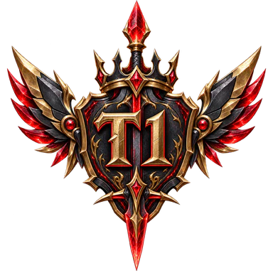
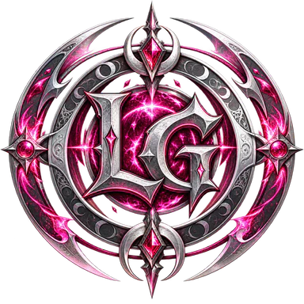

전승의 끝에, 한 번 더 뒤집었다
FM이 리버스콜 클랜 시즌 4의 정규시즌과 챔피언스리그를 모두 제패했다. 정규 일곱 경기를 전부 이긴 뒤, 11월 12일 결승에서 한화를 101점 차로 꺾었다. 시즌 1에 이어 클랜 이름 기준 두 번째 통합 우승이다.
결승은 일방적이지 않았다. 완료 기록을 합산한 50분 시점에는 한화가 1,083 대 1,003으로 앞섰다. 남은 10분 동안 FM이 232점, 한화가 51점을 더하면서 승부가 뒤집혔다.
50분에는 80점 열세, 마지막 10분에 뒤집었다
한화에 1,235 대 1,134… 시즌 4는 FM의 이름으로 끝났다
FM이 리버스콜 클랜 시즌 4의 정규시즌과 챔피언스리그를 모두 제패했다. 정규 일곱 경기를 전부 이긴 뒤, 11월 12일 결승에서 한화를 101점 차로 꺾었다. 시즌 1에 이어 클랜 이름 기준 두 번째 통합 우승이다.
결승은 일방적이지 않았다. 완료 기록을 합산한 50분 시점에는 한화가 1,083 대 1,003으로 앞섰다. 남은 10분 동안 FM이 232점, 한화가 51점을 더하면서 승부가 뒤집혔다.
FM의 ε연두з는 정규 공수 합산 374전 372승으로 개인 최다승에 올랐다. 한화의 깅더듬은 결승에서 공격 30승·방어 30승, 60전 전승을 기록했다. 팀의 우승과 개인의 활약이 서로 다른 장면으로 남았다.
28번의 정규 경기와 두 번의 챔스 경기, 완료 전투 21,564건을 통해 여덟 클랜의 시즌을 돌아본다. 전승 우승의 FM부터 끝까지 완주한 롯데까지, 각자의 숫자에는 각자의 이야기가 있다.
같은 480회 공격, FM은 49승 더… 전투에서 벌린 98점이 승부를 갈랐다
결승에서 두 팀은 각각 480회 공격했다. FM이 265승, 한화가 216승을 거뒀다. 공격 승리 3점·패배 1점의 참여점수는 1,010 대 912. 같은 공격 횟수에서 만든 49승 차가 98점으로 이어졌다.
전장 활동은 FM 225점, 한화 222점으로 팽팽했다. 임무·협동·스킬이 더한 점수까지 합치자 최종 격차는 101점이 됐다.
10분에는 한화가 353 대 295로 앞섰다. 20분에는 FM이 691 대 680으로 앞섰고, 40분에도 27점 우위였다. 그러나 50분에는 한화가 다시 80점을 앞섰다.
마지막 10분의 득점은 FM 232점, 한화 51점. 이 구간에서만 격차가 FM 쪽으로 181점 움직였다. 우승은 마지막 구간의 공격과 활동이 모두 반영된 뒤에야 갈렸다.
완료 기록의 시각을 기준으로 합산했다. 실제 게임 화면에 표시된 갱신 시각과는 차이가 있을 수 있다.
한화는 DC를 100점 차로 꺾고 결승에 올랐다. 전장 활동은 225점씩 같았고, 전투 참여점수 984 대 884가 그대로 승부의 차이가 됐다. 한화는 두 경기를 연달아 치르며 시즌 마지막 밤의 두 무대에 모두 섰다.
FM 37점 · 한화 32점 · DC 29점… 공식 승점 상위 세 팀이 챔스로 향했다
| 순위 | 클랜 | 승점 | 승-패 | 누적점수 | 득실차 | 1R → 7R |
|---|---|---|---|---|---|---|
| 1 | FM | 37 | 7-0 | 8,035 | +2,388 | WWWWWWW |
| 2 | 한화 | 32 | 5-2 | 8,092 | +1,465 | WWLWWWL |
| 3 | DC | 29 | 5-2 | 6,847 | +766 | LWWWLWW |
| 4 |  T1 | 20 | 3-4 | 5,390 | -636 | WLLLWWL |
| 5 | DK | 13 | 4-3 | 6,273 | +171 | WLWWLLW |
| 6 |  LG | 13 | 1-6 | 5,480 | -847 | LLLLLLW |
| 7 | 삼성 | 9 | 3-4 | 5,883 | -50 | LWWLWLL |
| 8 | 롯데 | 0 | 0-7 | 4,434 | -3,257 | LLLLLLL |
정규 28경기 기준. 공식 순위는 승점, 완료 정규 경기 누적점수, 득실차 순으로 비교한다.
승점은 경기 승수와 다른 지표다. 누적점수에는 전투 참여점수와 전장 활동점수가 함께 포함된다.
FM은 10월 28일 삼성전에서 1,153 대 779로 출발했다. 2라운드 DK전의 66점 차 승리가 가장 아슬아슬했다. 이후 LG·T1·DC·롯데를 차례로 이겼고, 최종전에서는 한화를 1,329 대 1,136으로 제압했다.
정규 득실차 +2,388은 여덟 클랜 가운데 가장 높다. 누적 실점 5,647점도 가장 적었다. 많이 얻는 것과 적게 내주는 것을 함께 해낸 전승이었다.
한화는 누적점수 8,092점으로 FM보다 57점 높았다. 하지만 맞대결을 포함해 두 번 패했고, 공식 승점 32로 정규 2위에 자리했다. DC는 한화와 같은 5승 2패, 공식 승점 29로 3위를 확정했다.
DK와 LG는 공식 승점 13으로 동률이었다. 다음 기준인 누적점수에서 DK가 6,273 대 5,480으로 앞서 5위를 차지했다. 최종 표는 승수만으로 읽을 수 없는 시즌의 기록이다.
DC 1,036
한화 1,031
한화 1,126
LG 1,111
FM 1,005
DK 939
정규 개인 최다승 · 공격 205승과 방어 167승… 승률 99.5%
374회 교전 · 2패 · 공격 206회 중 205승
결승에서도 64전 60승 · 공격 30승, 방어 30승
| 순위 | 플레이어 | 클랜 | 승수 | 교전 | 공격승 | 방어승 | 승률 |
|---|---|---|---|---|---|---|---|
| 1 | ε연두з | FM | 372 | 374 | 205 | 167 | 99.5% |
| 2 | 씨나인택갓 | 한화 | 356 | 370 | 198 | 158 | 96.2% |
| 3 | [C9]족쪽이 | LG | 350 | 354 | 194 | 156 | 98.9% |
| 4 | 더듬이구 | DC | 344 | 369 | 190 | 154 | 93.2% |
| 5 | 족단 | FM | 342 | 375 | 188 | 154 | 91.2% |
| 6 | 학벌 | DK | 333 | 363 | 180 | 153 | 91.7% |
| 7 | 족게이다 | T1 | 315 | 361 | 164 | 151 | 87.3% |
| 8 | 간장왕대게찜 | 한화 | 314 | 366 | 178 | 136 | 85.8% |
| 9 | 라피e | 롯데 | 307 | 354 | 152 | 155 | 86.7% |
| 10 | 0수표 | T1 | 301 | 392 | 166 | 135 | 76.8% |
완료된 정규 전투만 집계. 공격과 방어를 각각 개인 교전으로 센다. 동승수면 교전 수가 적은 순.
전투 당시 소속 기준이며, 닉네임은 조회 시점 공개 이름이다. 별도 공식 수상·보상을 뜻하지 않는다.
ε연두з는 정규 공격에서 단 한 번, 방어에서 단 한 번 졌다. 공격과 방어 모두에서 쌓은 승리가 개인 1위와 FM의 전승에 겹쳤다. 같은 팀 족단도 342승으로 전체 5위에 이름을 올렸다.
한화의 씨나인택갓은 356승, LG의 [C9]족쪽이는 350승으로 뒤를 이었다. [C9]족쪽이는 354전에서 네 번만 패했다. 클랜 순위와 관계없이 높은 개인 승률이 빛났다.
한화 깅더듬은 결승 공격 30회와 방어 30회를 모두 이겼다. 60전 60승, 승률 100%. 우승은 FM으로 갔지만, 개인 공수 합산에서 한 번도 패하지 않은 기록은 깅더듬의 몫이었다.
결승의 ε연두з도 60승으로 나란히 가장 많은 승리를 거뒀다. 교전 수는 64회였다. 한화의 간장왕대게찜은 56승, 씨나인택갓은 55승으로 마지막 무대를 받쳤다.
순위표 한 줄로 끝내기에는, 각 팀이 지나온 장면이 달랐다
정규 7전 전승에 결승 승리까지 더했다. 최종전과 결승에서 한화를 연달아 꺾었고, 정규 득실차도 전체 1위였다. 가장 가까웠던 DK전의 66점 차 승리부터 결승 마지막 10분까지, 접전도 놓치지 않았다.
팀 내 정규 최다승 ε연두з 372승정규 누적점수 8,092로 전체 1위. DC에 5점 차로 진 3라운드의 아쉬움을 준결승 100점 차 승리로 되갚았다. 결승에서는 50분에 80점을 앞섰지만 마지막 구간을 지키지 못했다. 두 번의 준우승이 남았다.
팀 내 정규 최다승 씨나인택갓 356승정규 5승 2패로 세 번째 챔스 자리를 차지했다. 한화와의 정규 맞대결에서 1,036 대 1,031로 이긴 경기는 시즌 최소 격차였다. 준결승에서는 같은 상대에게 1,109 대 1,209로 패하며 도전을 마쳤다.
팀 내 정규 최다승 더듬이구 344승시즌 3 통합 우승을 차지했던 클랜은 이번 시즌 공식 승점 20으로 4위에 멈췄다. 정규 전적은 3승 4패. 족게이다 315승과 0수표 301승이 개인 기록 상위권을 지켰지만, 챔스에 닿지는 못했다.
팀 내 정규 최다승 족게이다 315승4승 3패, 득실차 +171로 정규 경기를 마쳤다. FM에 939 대 1,005로 패한 2라운드는 전승팀을 가장 가까이 몰아붙인 경기였다. 공식 승점은 LG와 같은 13점, 누적점수 우위로 5위를 차지했다.
팀 내 정규 최다승 학벌 333승첫 경기에서 한화에 1,111 대 1,126, 15점 차로 패했다. 정규에서는 1승 6패에 그쳤지만 마지막 롯데전에서 642 대 307로 승리했다. [C9]족쪽이의 350승·승률 98.9%는 개인 전체 3위 기록이었다.
팀 내 정규 최다승 [C9]족쪽이 350승3승 4패, 누적 득점 5,883과 실점 5,933. 전체 점수 차이는 50점에 불과했지만 공식 승점 9로 7위를 기록했다. LG·T1·롯데에 승리했고, 최종 DK전은 555 대 687로 마무리했다.
팀 내 정규 최다승 망순이ෆ 245승정규 7경기에서 승리를 얻지 못했다. FM전 419 대 1,401이 가장 큰 격차였고, LG와의 마지막 경기도 패했다. 그 안에서 라피e는 307승, 개인 전체 9위를 기록했다. 팀 성적과 별개로 남겨야 할 분전이다.
팀 내 정규 최다승 라피e 307승시즌 1 이후 두 번째 통합 우승… 시즌 5는 새 명단으로 50일을 준비한다
정규 FM
챔스 FM
정규 DK
챔스 DC
정규 T1
챔스 T1
정규 FM
챔스 FM
클랜 이름 기준 우승 연대기. 같은 이름의 클랜이라도 시즌마다 구성원은 다를 수 있다.
시즌 1은 FM이 정규와 챔스를 모두 우승했다. 시즌 2에는 DK가 정규, DC가 챔스를 나눠 가졌고, 시즌 3은 T1이 두 우승을 거머쥐었다. 시즌 4의 두 칸에는 다시 FM이 적혔다.
이번 기록은 같은 선수들이 연속으로 우승했다는 뜻은 아니다. 명단이 바뀌는 시즌 구조 안에서, FM이라는 클랜 이름이 두 번째 통합 우승을 남겼다는 의미다.
FM의 챔스 우승 확정 명단은 15명이다. 정규 1위 보상과 챔스 우승 추가 보상을 각각 지급받았다. 두 보상의 코인 합계는 1인당 3,000조이며, 메시지 첨부 보상은 메시지함에서 수령하는 방식이다.
챔스 우승 추가 칭호 ‘챔스의 지배자’는 장착 시 PvE·PvP 전투력 각각 150만을 더한다. 이번 지급분의 만료는 12월 12일 23시 15분 22초다.
ε연두з · 관종이얌 · 대저동토마토 · 리이렐 · 박사 · 박세라-ㅂ- · 여우 · 오승환이다 · 장씨아저씨 · 전게씹선미아웃 · 점빡이 · 조은 · 족단 · 핫시 · 화성가뿌자
무기·방어구 강화주문서 각 10개
피그코인 3,000개 · 메시지 지급
코인 메시지 + 30일 칭호
‘챔스의 지배자’ 보유 지급
대상자별 지갑 직접 지급
정규 보상 전체 대상 116명
운영 확정 기록의 읽기 전용 스냅샷으로 30경기의 점수와 전투 수를 대조했다. 완료 전투 21,564건만 사용하고 실패 상태 60건은 제외했다. 개인 공수 합산 교전은 전투 한 건을 두 선수에게 각각 기록하므로 전체 43,128회다. 인터뷰와 발언은 만들지 않았으며, 편집부의 해석과 확인된 숫자를 구분했다. 자세한 출처·산식은 동봉한 sources.txt와 facts.json에 있다.
화살표 키로 지면을 넘길 수 있습니다. 휴대폰에서는 본문이 한 열로 재배치됩니다.
시즌 4 확정 기록과 11월 14일 발행 당시 시즌 5 일정 기준 · 상징 삽화는 AI 생성 이미지입니다.